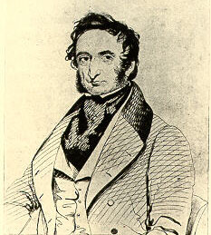

|  |
Robert James Graves was one of the leaders of the Irish, or Dublin school of diagnosis, which emphasised clinical observation of patients.
He was the son of a clergyman. He received his degree from the University of Dublin in 1818 after a brilliant undergraduate career. After studying in London, Berlin, Göttingen, Hamburg and Copenhagen, he returned to Dublin in 1821 and set up a medical practice, becoming chief physician at Meath Hospital. He was also physician at the County of Dublin Infirmary and the Hospital for incurables.
At Meath in Dublin Graves also taught clinical medicine, introducing reforms of medical training that he had witnessed on his travels. This included, among other things, bedside teaching, a major novelty in a country where medical teaching had been ex cathedra only. Graves assigned to advanced students the responsibility for diagnosis and treatment of ward patients, under the supervision of the faculty. One of his students was William Stokes (1804-1878), who soon became his collaborator. Another student of his was Richard Townsend, who obtained his doctorate at Edinburgh in 1824.
Graves showed the qualities that would ensure a great teacher. He was tall, somewhat swarthy with a vivacious manner, and like other avant-garde professors of his time, he gave his lectures in English rather than in Latin, or Dog Latin as was still the case in most classes in the 1830's. In his introductory lecture he said: "From the very commencement the student should set out to witness the progress and effects of sickness and ought to persevere in the daily observation of disease during the whole period of his studies".
Among the innovations introduced in the lectures were the timing of the pulse by watch and the practicing of giving food and liquids to patients with fever instead of withholding nourishment. It was on a ward round Graves light-heartedly suggested to William Stokes that his epitaph should read: "He fed fevers."
As well as the practical importance of bedside learning to ensure that a graduate was not "a practitioner who has never practised" he emphasised the importance of research, "learn the duty as well as taste the pleasure of original work".
Graves was sometimes sarcastic. In dealing with a colleague's attack on the use of the stethoscope, which was advocated by himself and Stokes, he wrote: "We suspect Dr Clutterbuck's sense of hearing must be injured: for him the 'ear trumpet' magnifies but distorts sound, rendering it less distinct than before". Dr. Clutterbuck was Henry Clutterbuck, 1770-1856.
In recognition of his achievements in education, Graves was named Regius professor of the Institute of Medicine in Trinity College. A founder of the Dublin Journal of Medical and Chemical Science, he served as one of the journal's editors to his death.
The trouble with many talents
Graves had an exceptional talent for languages and was once imprisoned
as a Germany spy for 10 days in Austria whilst travelling on foot without
a passport. No one believed an Englishman could speak German so well. On
another journey he saved a ship and its mutinous crew by assuming command
during a storm in the Mediterranean. During a gale the ship sprang leak,
pumps failed and the crew attempted to abandon ship but Graves holed the
one lifeboat with an axe and repaired the pumps with leather from his own
shoes and all aboard survived. Whilst travelling in the Alps he became
acquainted with the famous painter Joseph Mallord William Turner (1775-1851).
They travelled and painted together for several months, eventually parting
company in Rome.
Graves’ disease
Graves was the first physician to fully describe exophthalmic goiter,
now called Graves' disease or Basedow's disease. The symptom is protruding
eyes. In 1834 Graves delivered a series of lectures that were published
in 1835. He here describes in detail three patients with palpitations and
enlargement of thyreoidea. One of the patients, in fact described second
hand, had eye symptoms: "The eyeballs were visibly enlarged, to such a
degree the eyelids were unable to shut during sleep and when trying to
close the eye. When the eyes were open the white of the eyes could be seen
in the breadth of several lines around all of cornea."
Graves gives much space to descriptions of the pulse and the sounds from the heart. He described how his first patient had such a strong (first) heart tune that one could hear the heart beat while keeping the ear more than four feet from the patient's chest. Graves considered the enlargement of the thyroidea as secondary to the increased heart function. He theorises:
"It is obvious, gentlemen, that if palpitations in functional heart disease can cause swelling of the thyroidea, we can also expect to see a swelling of this gland as palpitations originate from organic heart disease.”
Besides hyperthyroidism he also described angioneurotic oedema, scleroderma, erythromelalgia, the pin-hole pupil in pontine bleeding
Graves lasting fame rests chiefly on his Clinical Lectures, which were a model for the day and recommended by none other than Armand Trousseau (1801-1867), who suggested the term Graves' disease.
A statue of him was erected in Dublin in 1878.
«This [the healthy appearance of convalescents from typhus at
Meath Hospital, Dublin] is all the effect of our good feeding; and lest
when I am gone, you may be at a loss for an epitaph for me, let me give
you one, in three words: “He Fed Fevers.”
Quoted in A Memorial of Graves, «The Life and Labours of Graves»
With William Stokes he edited the Dublin Journal of Medical and Chemical Science from 1832 to 1842, a journal he had founded with Sir Robert Kane (1810-1890), physician, chemist, and professor of natural history.
A collection of various of his papers, including a biography, was published
by William Stokes as Studies in Physiology and Medicine. London, 1863.
Graves published John Noble Johnson's :
Obituaries: